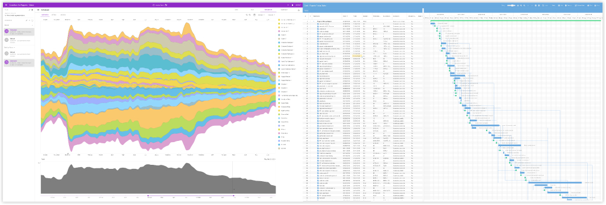
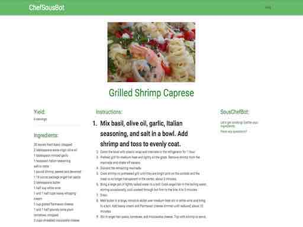
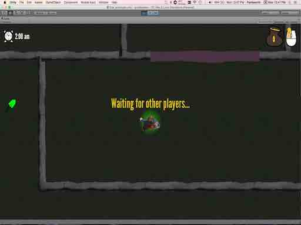

Software
A selection of publications and personal projects.
Automated Resource Leveling & Scheduling at LAIKA
A talk on the automated scheduling work I did at LAIKA — integrating Consilium (a machine-learning tool for autoscheduling) to reschedule and level multi-year asset-fabrication schedules with tens of thousands of tasks, and designing and building the data visualizations around it.
Presented at:

SlitScannr
A user-friendly realization of slitscan imaging — in which each vertical column of pixels in the image represents the same place, at a different time.


Temporal Median Video
Python program for processing a temporal median filter effect across a set of frames from a video.
SousChefBot
A demo of a recipe website featuring Alexa-esque voice commands. Used wit.ai API and annyang. Built as part of a Human-Computer Interaction class.

Gone By Dawn
Team project for EECS 370: Game Design. A fast-paced top-down multiplayer game about graverobbing. Developed on a 4-person team as part of a game design class. I focused on UI development, animation, and aesthetics – all the visuals in the game were created using stopmotion animation on real clay objects, which were later converted to sprites for Unity.
